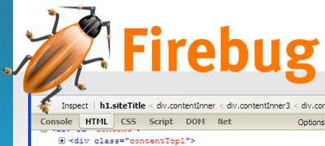
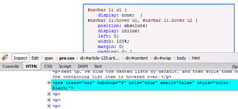
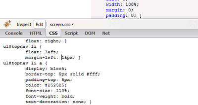
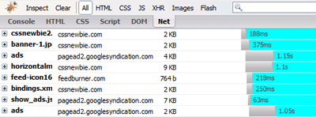
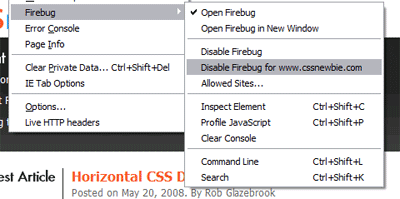

Have you tried out Firebug yet? If not, you might want to consider giving it a go. It’s one of a few Firefox extensions that I use almost daily in my web development work, and I can guarantee that it’s made my life at least a little bit easier. And isn’t that what we’re all after… you know, deep, deep down? It ranks right up there with a giant trampoline in my book.
I most often use Firebug for its ability to “inspect” various elements on the page. If you’re running into a problem where a specific element on your page just isn’t working properly, you can just open Firebug and click the “Inspect” button. Then just mouse over whatever element is misbehaving and Firebug will give you a ton of detail on that item. You can see where it’s sitting in your XHTML, to see if your element is nested the way you thought. You can also see what CSS rules apply to that element, and (perhaps cooler still) see which CSS rules have been overwritten by other CSS rules. That can be a huge help when your CSS file starts reaching filibuster-appropriate lengths.

You can also use Firebug to edit your CSS, XHTML, and even JavaScript on the fly. This can be an invaluable trick for troubleshooting problems quickly. If you use the Inspect tab and find a problem, you can just pop over to the edit tab really quickly and try out a fix. Your changes to the code are reflected on the screen within a second of your edit. And if your first fix didn’t work, you can just try another.

Another great feature of Firebug is the Net tab. If your page is loading slowly, just pop the Net tag open and take a look at the available charts. There, every single part of your page is broken down into its constituent elements, their size, and how long it took to download that particular element. And at the bottom of the chart, you can see the number of requests to the server your page required, the total number of KB downloaded, and the time it took to put it all together.

Firebug isn’t perfect, however. It can sometimes slow down certain pages if it’s running in the background – particularly, it seems, pages that make a lot of calls to the server. So AJAX-y pages (such as Gmail) or pages that refresh often can slow down significantly if you’re using Firebug. However, you do have the option to disable Firebug for specific websites. Simply go to that website, and go to Tools -> Firebug -> Disable Firebug for [whatever website]. The program won’t run on those pages: problem solved.

In short, Firebug can be a great tool for debugging your XHTML, CSS, and JavaScript. It’s also a great way to learn more about the techniques of others: just navigate to a page you like, and use Firebug to check out how its all put together. If you don’t have it yet, you can get a copy of Firebug for Firefox here. And don’t say I never did nothin’ nice for you.
@Rob: You can also disable Firebug for the ‘Net and simply enable it for the sites that interest you. Doing that avoids the slow-down you mention.
Right-click the Firebug icon (bottom right) to access this option.
P.S. I am no newbie, but love your articles. Thanks.
I like firebug sometimes too, but it also happens often that it makes firefox freeze or even worse: crash. So I don’t use it very often ;)